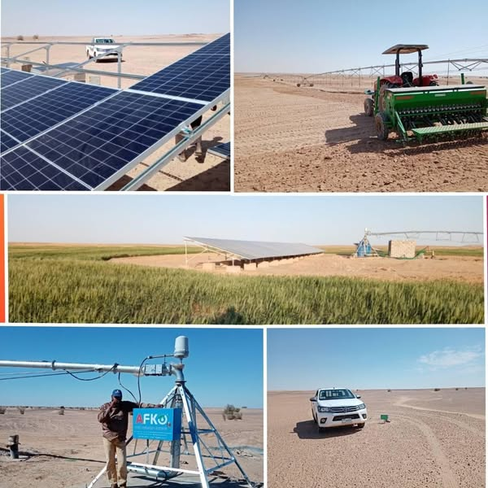

FEATURED STORY / قصة مشروع
أرض الخير: ربط الإنتاج بالمياه والطاقة.Ardh Al-Khair: connecting production with water and energy.
تقدم المواد التعريفية التي شاركتها الشركة مشروع أرض الخير بوصفه مشروعًا للإنتاج الزراعي والحيواني يرتبط بالري والطاقة والعمل الميداني.Company-supplied materials present Ardh Al-Khair as an agricultural and livestock production project connected to irrigation, energy and field operations.

FEATURED STORY / قصة مشروع
المفهومThe concept
النظر إلى المياه والطاقة والري والإنتاج بوصفها عناصر مترابطة في العمل الزراعي.Treat water, energy, irrigation and production as connected elements of agricultural operations.
FEATURED STORY / قصة مشروع
المواد المتاحةAvailable documentation
تُعرض الصور والمعلومات المتاحة كما وردت من الشركة مع عدم إضافة نتائج أو أرقام غير موثقة.Images and available information are shown as supplied, without adding unverified results or figures.
FEATURED STORY / قصة مشروع
الخطوة التاليةNext steps
يمكن مناقشة تفاصيل المشروع ونطاق الشراكة والوثائق ذات الصلة مباشرة مع الشركة.Project details, partnership scope and supporting documentation can be discussed directly with SUDI.